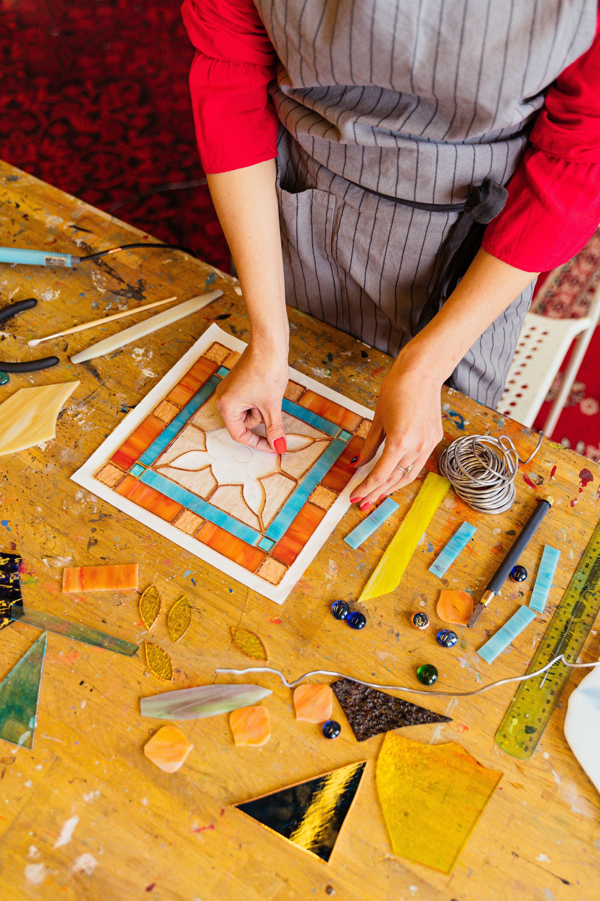
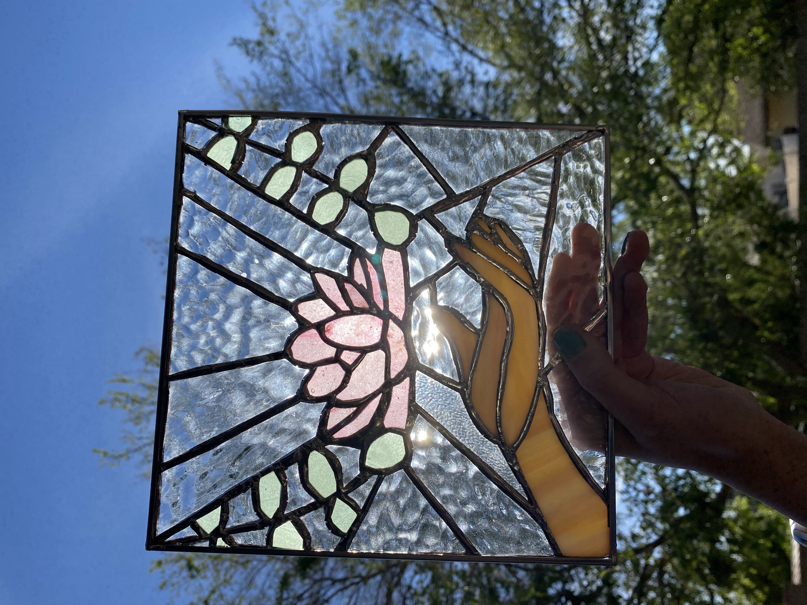

Cut ✦ Grind ✦ Foil ✦ Solder ✦ Repeat ✦ Cut ✦ Grind ✦ Foil ✦ Solder ✦ Repeat ✦ Cut ✦ Grind ✦ Foil ✦ Solder
Fresh off the workbench

Water Lily 
PNW Landscape 
Floral Hand
Start wherever you like
Got a tip of your own?
Beginner or pro, share what you've learned and it might be featured here.
Share a tipMeet the studio
After falling in love with stained glass in high school, I slowly but surely have started to build my own workstation at home. Take a look!
Curious how it began? Read the history
Learn more